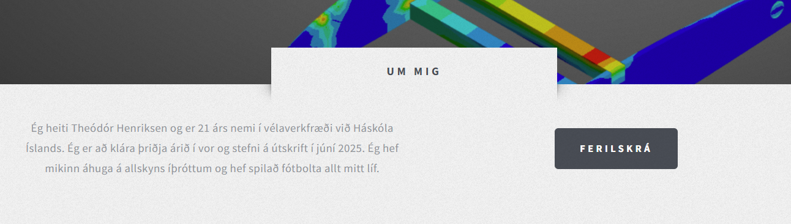
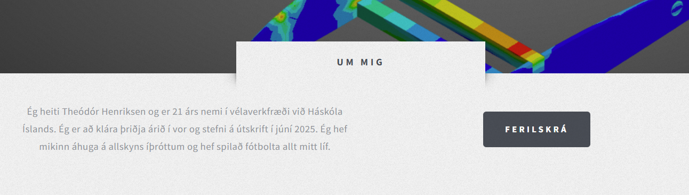

Hönnun þessarar vefsíðu og notkun Git
 

Hönnun vefsíðu
Fyrsta skrefið í ferlinu var að sækja Brackets svo ég gæti hafist handa við vefsíðugerðina. Að því loknu skoðaði ég templatein á Html5up og valdi að lokum það sem mér leyst best á, sem var "Escape Velocity". Fyrst skrifaði ég stutta kynningu á mér á forsíðuna til að sjá hvernig það liti út en áttaði mig fljótt á því að þrátt fyrir að hafa valið þetta template fannst mér litasamsetningin á því forljót. Ég ákvað þá að breyta um lit. Við það að breyta forsíðunni áttaði ég mig fljótt á því að ég kunni ekki nægilega vel á CSS og HTML og hjálpaði það ekki að CSS kóðinn fyrir templateið voru rúmar 3000 línur sem voru ekki svo auðlesanlegar. Þá leytaði ég mér hjálpar á W3schools og hjá ChatGPT vini mínum. Þá loksins náðist að breyta litnum og áhvað ég að skipta "um mig" kaflanum í tvennt og notaði ég .row klasa sem var innbyggður í templateið til að skipta kaflanum í tvennt og setja textann einu megin og takkann hinu megin.
 Ég var samt ekki nógu sáttur með gráa litinn sem var á öllu, m.a. footernum og ákvað ég að breyta honum líka. Það gerði ég með því að finna #footer í CSS kóðanum og breyta þar um lit. Svo fannst mér footerinn einnig allt of mikill og vildi hafa hann einfaldari og stílhreinni. Ég fékk innblástur fyrir honum hjá síðum fyrrum nemenda t.d. hjá Sveini Margeiri. Hér að neðan má sjá hvernig footerinn var og svo með að fara alla leið niður á þessari síðu má sjá hvernig hann er núna.
Ég var samt ekki nógu sáttur með gráa litinn sem var á öllu, m.a. footernum og ákvað ég að breyta honum líka. Það gerði ég með því að finna #footer í CSS kóðanum og breyta þar um lit. Svo fannst mér footerinn einnig allt of mikill og vildi hafa hann einfaldari og stílhreinni. Ég fékk innblástur fyrir honum hjá síðum fyrrum nemenda t.d. hjá Sveini Margeiri. Hér að neðan má sjá hvernig footerinn var og svo með að fara alla leið niður á þessari síðu má sjá hvernig hann er núna.

 Svo hófst ég handa við ferilskráarsíðuna sem var ákveðið bras en fékk ég innblástur frá vefsíðunni hennar Margrétar frá í fyrra. Að lokum fannst mér hún heppnast mjög vel en til að njóta gluggans til hins fyllsta mæli ég með að hafa skoða hann í "full screen" þar sem ferilskráin klessist leiðinlega saman ef maður er með gluggann of lítinn.
Svo hófst ég handa við ferilskráarsíðuna sem var ákveðið bras en fékk ég innblástur frá vefsíðunni hennar Margrétar frá í fyrra. Að lokum fannst mér hún heppnast mjög vel en til að njóta gluggans til hins fyllsta mæli ég með að hafa skoða hann í "full screen" þar sem ferilskráin klessist leiðinlega saman ef maður er með gluggann of lítinn.
Innsetning mynda á þessa síðu var ekki það einfaldasta sem ég hef gert. Í upphafi reyndi ég að skoða og breyta CSS klösum úr templateinu en á endanum gafst ég upp á því og endaði með að búa bara til nýja klasa með aðstoð ChatGPT. Ég bjó til fimm mismunandi klasa fyrir þær myndir sem hér eru inni og byggja þeir allir í grófum dráttum á því sama, þ.e.a.s. að stilla hvar myndin er staðsett með float skipun, stærð myndarinnar með width skiptun og spássíu utanum myndirnar með margin skipun. Klasana fjóra má sjá hér til hægri og ef maður er vill getur maður reynt að tengja saman hvaða mynd er í hvaða klasa.